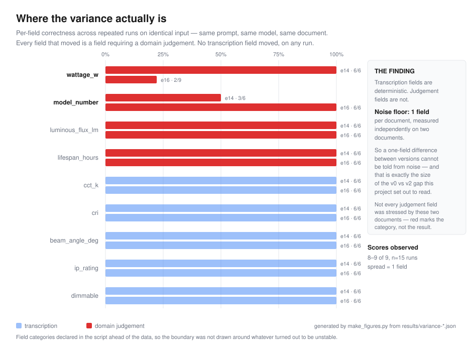

I built a system that reads lighting product datasheets and pulls out nine technical values. The extraction was the easy part. Working out whether it was right took three times as long — and taught me more.
A lighting datasheet tells you what a light fitting does — how much power it draws, how much light it produces, how long it lasts. Specifiers and wholesalers pull those figures out by hand, one PDF at a time.
It looks like typing. It isn't.
A single datasheet routinely prints three numbers that could all plausibly be "the wattage": the system power, the LED module load, and an efficacy figure in lumens-per-watt that sits between them and looks like it belongs to either. Only one is right.
Take the LED load instead of the system wattage and the electrical circuit is undersized. Quote the warranty period instead of the L80/B10 rated life — routinely printed more prominently, and often double the real figure — and the maintenance budget is wrong for a decade.
Knowing which number is correct is domain knowledge, not a parsing problem.
I spent years in the lighting industry before moving into AI engineering. That turned out to be the part that mattered.
A service that takes datasheet text and returns nine validated fields as structured data. A language model does the reading; a schema enforces the shape; the domain rules — system wattage over LED load, rated life over warranty, luminaire output over module output — are written into both the prompt and the schema, because the model has no way to know them.
Behind it sits the part that took most of the time: an evaluation harness. Eighteen documents, 162 individual field judgements, each answer written by hand against the source. Every change is scored against it.
161 of 162 field judgements correct. 17 of 18 documents perfect.
That number is one sample, not a property of the system — and I can say that precisely, because I measured it.
Language models are not deterministic. Run the same document, with the same prompt, on the same model, and you can get a different answer. Everyone knows this in the abstract. Almost nobody measures it.
I did, and the result changed what I was allowed to claim.

Across repeated identical runs on two documents, seven of the nine fields returned the same value every single time. The two that moved were the two that require a judgement rather than a transcription: a wattage qualified by a footnote the document never fully resolves, and an order code damaged by OCR where the rule is to preserve it exactly.
The system is deterministic where the task is transcription, and non-deterministic where it requires judgement.
Which means the run-to-run noise is one field per document — and any difference smaller than that between two versions of the system is not a result. It is a coin flip.
So I retracted my own finding. I had two versions of the prompt scoring 161/162 each and had been treating the comparison as meaningful. It wasn't. The difference sat inside the noise I had just measured. That is now written into the project's own documentation, in place of the claim.
Once the variance was measured, it made a prediction. So before regenerating the results I committed a file to version control stating what the run would produce, the probability of each possible outcome, which two documents would fail and with what values — and what result would prove the model wrong.
| Predicted, in advance | Observed | |
|---|---|---|
| Score | 160.7 ± 0.7 | 161 |
| Which field fails | e16 wattage, returns 200 | e16 wattage, returned 200 |
| Any other document failing | would falsify the finding | none did |
The prediction is not the interesting part. The falsification condition is: sixteen documents had been assumed stable on a single observation each, and a failure in any of them would have meant the finding above was overstated. All sixteen held.
Each was implemented, measured against the eval set, and removed on the numbers. The code stays in the repository with the verdict recorded at the top of the file.
| Component | What the measurement said |
|---|---|
| Source citations Quote the line each value came from |
Worked on simple documents. On the hardest one it took extraction from 9 fields correct to 1. Asking for evidence and extraction together degrades extraction. |
| Retrieval (RAG) Fetch only the relevant passages |
Increased the context by 24.7% and changed accuracy by nothing. Retrieval shrinks context only when most of the document is irrelevant — not true here. |
| A verification pass A second call that checks the first |
Shown its own preferred answer, it kept it. Shown the opposite, it kept that too. It returns whatever it is handed. Two API calls to find that out. |
On four occasions the harness reported a failure and the model was right — the answer key was wrong. The first three drove structural fixes; the evaluation now validates its own inputs before it is allowed to score anything.
An evaluation score is only as trustworthy as the answer key behind it — and the answer key is the part nobody checks.
All eighteen documents are synthetic. This has never run on a real manufacturer PDF, so the accuracy figure describes performance on documents from its own distribution and says little about real-world layout variety. Ten of the eighteen answer keys were written unassisted; eight were assisted and then verified field by field. Variance is measured on two documents, not eighteen. The service is deployed and has served only test traffic.
All of that is in the repository's limitations section, because a number without its caveats is a decoration.
Most teams shipping LLM features cannot tell you whether last week's prompt change made things better or worse. There is usually a number, and it is usually a single run, and nobody has checked what it can actually detect.
That is the work I want. If you have a feature whose correctness matters and no measurement you trust, I will build you an evaluation harness for it — real cases, hand-written expected outputs, per-field scoring, a number you can run on every change. I will do the first one free, because a track record on someone else's real system is worth more to me than the fee.
The only things I need are twenty real examples, and thirty minutes with whoever knows what "correct" means for your data. That second one is where these normally go wrong.